PGP
Pretty Good Privacy
Presentation by Michael Louie Loria
source: http://computercheckup.aol.com/articles/infographics/history-of-encryption/
Transposition Cipher
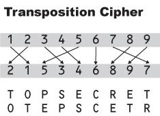Caesar Cipher
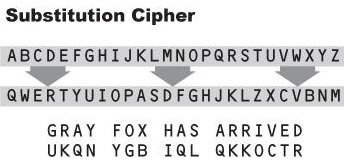Frequency Analysis
Frequency analysis is the study of the frequency of letters or groups of letters in a ciphertext. The method is used as an aid to breaking classical ciphers.
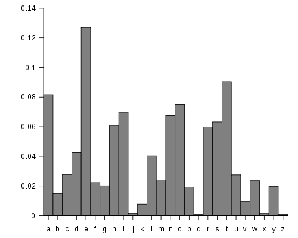Polyalphabetic Cipher
GnuPG is the GNU project's complete and free implementation of the OpenPGP standard as defined by RFC4880 . GnuPG allows to encrypt and sign your data and communication, features a versatile key management system as well as access modules for all kinds of public key directories. GnuPG, also known as GPG, is a command line tool with features for easy integration with other applications. A wealth of frontend applications and libraries are available.
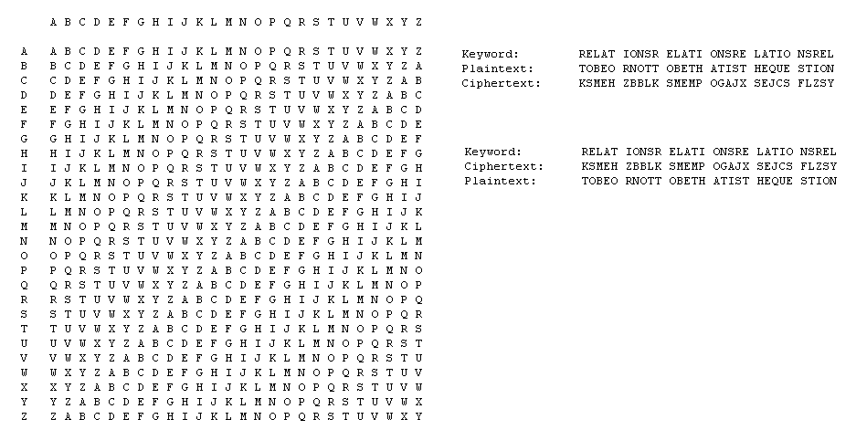Jefferson Wheel
Jefferson Wheel is a cipher system using a set of wheels or disks, each with the 26 letters of the alphabet arranged around their edge. The order of the letters is different for each disk and is usually scrambled in some random way. Each disk is marked with a unique number. A hole in the centre of the disks allows them to be stacked on an axle. The disks are removable and can be mounted on the axle in any order desired. The order of the disks is the cipher key, and both sender and receiver must arrange the disks in the same predefined order. Jefferson's device had 36 disks.
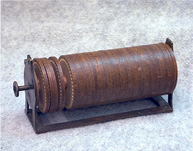Enigma Machine
An Enigma machine was any of a family of related electro-mechanical rotor cipher machines used in the twentieth century for enciphering and deciphering secret messages. Enigma was invented by the German engineer Arthur Scherbius at the end of World War I.[1] Early models were used commercially from the early 1920s, and adopted by military and government services of several countries most notably by Nazi Germany before and during World War II

Enigma Machine
An Enigma machine was any of a family of related electro-mechanical rotor cipher machines used in the twentieth century for enciphering and deciphering secret messages. Enigma was invented by the German engineer Arthur Scherbius at the end of World War I.[1] Early models were used commercially from the early 1920s, and adopted by military and government services of several countries most notably by Nazi Germany before and during World War II
Data Encryption Standard
Data Encryption Standard (DES) is a previously predominant symmetric-key algorithm for the encryption of electronic data. It was highly influential in the advancement of modern cryptography in the academic world. Developed in the early 1970s at IBM and based on an earlier design by Horst Feistel, the algorithm was submitted to the National Bureau of Standards (NBS) following the agency's invitation to propose a candidate for the protection of sensitive, unclassified electronic government data
Advanced Encryption Standard
Advanced Encryption Standard (AES) is a specification for the encryption of electronic data established by the U.S. National Institute of Standards and Technology (NIST) in 2001.[4] It is based on the Rijndael cipher[5] developed by two Belgian cryptographers, Joan Daemen and Vincent Rijmen, who submitted a proposal to NIST during the AES selection process.[6] Rijndael is a family of ciphers with different key and block sizes. For AES, NIST selected three members of the Rijndael family, each with a block size of 128 bits, but three different key lengths: 128, 192 and 256 bits. AES has been adopted by the U.S. government and is now used worldwide. It supersedes the Data Encryption Standard (DES),[7] which was published in 1977. The algorithm described by AES is a symmetric-key algorithm, meaning the same key is used for both encrypting and decrypting the data..
PGP
Pretty Good Privacy (PGP) is a data encryption and decryption computer program that provides cryptographic privacy and authentication for data communication. PGP is often used for signing, encrypting, and decrypting texts, e-mails, files, directories, and whole disk partitions to increase the security of e-mail communications
OpenPGP
OpenPGP is a non-proprietary protocol for encrypting email using public key cryptography. It is based on PGP as originally developed by Phil Zimmermann. The OpenPGP protocol defines standard formats for encrypted messages, signatures, and certificates for exchanging public keys.
source: http://www.openpgp.org/
GnuPG
GnuPG is the GNU project's complete and free implementation of the OpenPGP standard as defined by RFC4880 . GnuPG allows to encrypt and sign your data and communication, features a versatile key management system as well as access modules for all kinds of public key directories. GnuPG, also known as GPG, is a command line tool with features for easy integration with other applications. A wealth of frontend applications and libraries are available.
source: http://gnupg.org/
links:
- GNU - http://www.gnu.org/
- Free Software - http://www.gnu.org/philosophy/free-sw.html
- GNU GPL - http://www.gnu.org/copyleft/gpl.html
Introduction
PGP encryption uses a serial combination of hashing, data compression, symmetric-key cryptography, and finally public-key cryptography; each step uses one of several supported algorithms.
Hashing
A cryptographic hash function is a hash function that takes an arbitrary block of data and returns a fixed-size bit string, the cryptographic hash value, such that any (accidental or intentional) change to the data will (with very high probability) change the hash value. The data to be encoded are often called the message, and the hash value is sometimes called the message digest or simply digest.
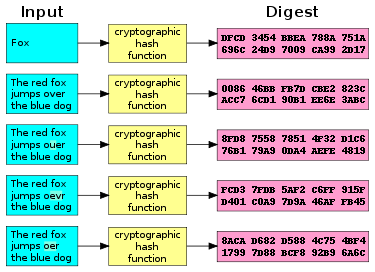Common functions: MD5, SHA-1, SHA-2, SHA-3/Keccak
Data compression
In computer science and information theory, data compression, source coding, or bit-rate reduction involves encoding information using fewer bits than the original representation.
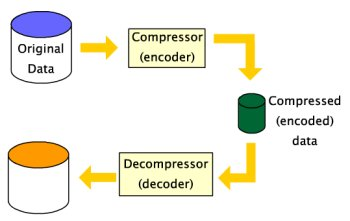Uses: PNG, Zip, MP3, MPEG
Symmetric-key cryptography
Symmetric key encryption is also known as shared-key, single-key, secret-key, and private-key or one-key encryption. In this type of message encryption, both sender and receiver share the same key which is used to both encrypt and decrypt messages. Sender and receiver only have to specify the shared key in the beginning and then they can begin to encrypt and decrypt messages between them using that key.
Common Algorithms: AES, Blowfish, DES, Triple DES, Serpent, Twofish
Symmetric-key Illustration
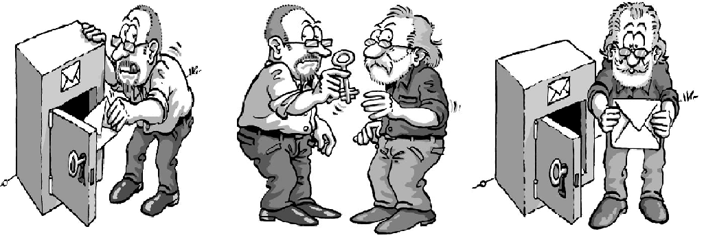Asymmetric-key/Public-key Illustration
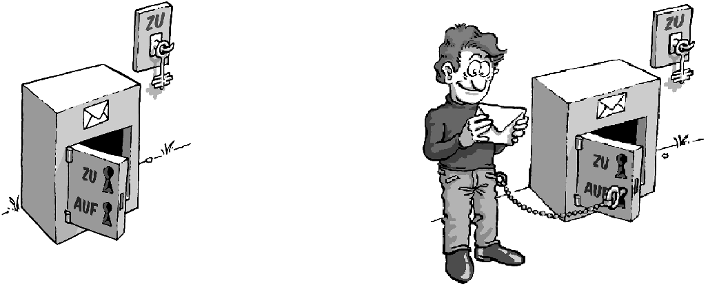Advantages
- Simple: This type of encryption is easy to carry out. All users have to do is specify and share the secret key and then begin to encrypt and decrypt messages.
- Encrypt and decrypt your own files: If you use encryption for messages or files which you alone intend to access, there is no need to create different keys. Single-key encryption is best for this.
- Fast: Symmetric key encryption is much faster than asymmetric key encryption.
- Uses less computer resources: Single-key encryption does not require a lot of computer resources when compared to public key encryption.
- Prevents widespread message security compromise: A different secret key is used for communication with every different party. If a key is compromised, only the messages between a particular pair of sender and receiver are affected. Communications with other people are still secure.
Disadvantages
- Need for secure channel for secret key exchange: Sharing the secret key in the beginning is a problem in symmetric key encryption. It has to be exchanged in a way that ensures it remains secret.
- Too many keys: A new shared key has to be generated for communication with every different party. This creates a problem with managing and ensuring the security of all these keys.
- Origin and authenticity of message cannot be guaranteed: Since both sender and receiver use the same key, messages cannot be verified to have come from a particular user. This may be a problem if there is a dispute.
Asymmetric-key/Public-key cryptography
This method of encrypting messages makes use of two keys: a public key and a private key.The public key is made publicly available and is used to encrypt messages by anyone who wishes to send a message to the person that the key belongs to. The private key is kept secret and is used to decrypt received messages.
Common Algorithms: RSA, DSA, ElGamal
How PGP encryption works
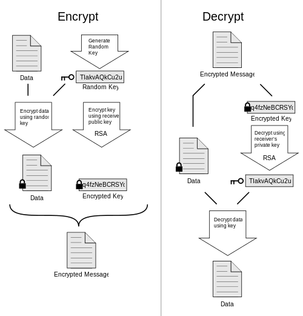PGP encryption
When a user encrypts plaintext with PGP, PGP first compresses the plaintext. Data compression saves modem transmission time and disk space and, more importantly, strengthens cryptographic security. PGP then creates a session key, which is a one-time-only secret key. This key is a random number generated from the random movements of your mouse and the keystrokes you type. This session key works with a very secure, fast conventional encryption algorithm to encrypt the plaintext; the result is ciphertext. Once the data is encrypted, the session key is then encrypted to the recipient's public key. This public key-encrypted session key is transmitted along with the ciphertext to the recipient.
PGP decryption
Decryption works in the reverse. The recipient's copy of PGP uses his or her private key to recover the temporary session key, which PGP then uses to decrypt the conventionally-encrypted ciphertext.
Advantages
- Convenience: It solves the problem of distributing the key for encryption.Everyone publishes their public keys and private keys are kept secret.
- Provides for message authentication: Public key encryption allows the use of digital signatures which enables the recipient of a message to verify that the message is truly from a particular sender.
- Detection of tampering: The use of digital signatures in public key encryption allows the receiver to detect if the message was altered in transit. A digitally signed message cannot be modified without invalidating the signature.
- Provide for non-repudiation: Digitally signing a message is akin to physically signing a document. It is an acknowledgement of the message and thus, the sender cannot deny it.
Disadvantages
- Public keys should/must be authenticated: No one can be absolutely sure that a public key belongs to the person it specifies and so everyone must verify that their public keys belong to them.
- Slow: Public key encryption is slow compared to symmetric encryption. Not feasible for use in decrypting bulk messages.
- Uses up more computer resources: It requires a lot more computer supplies compared to single-key encryption.
- Widespread security compromise is possible: If an attacker determines a person's private key, his or her entire messages can be read.
- Loss of private key may be irreparable: The loss of a private key means that all received messages cannot be decrypted.
Getting Started
- Generating a new keypair
- Exchanging keys
- Encrypting and decrypting documents
- Making and verifying signatures
Mailvelope
Mailvelope is a browser extension that allows to exchange encrypted emails following the OpenPGP encryption standard.
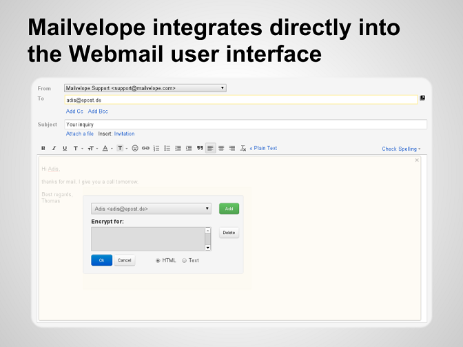Mailpile
A modern, fast web-mail client with user-friendly encryption and privacy features
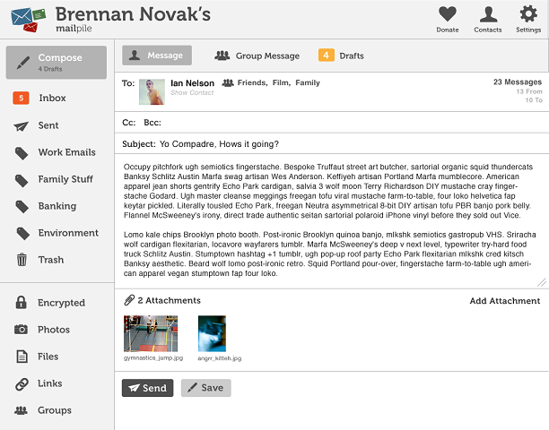